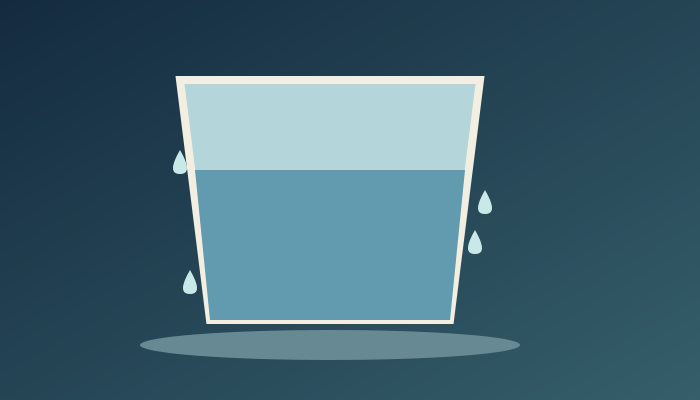
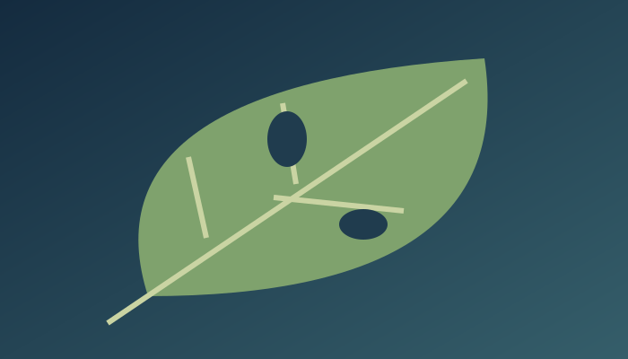
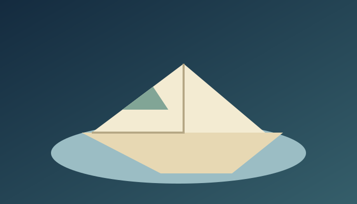
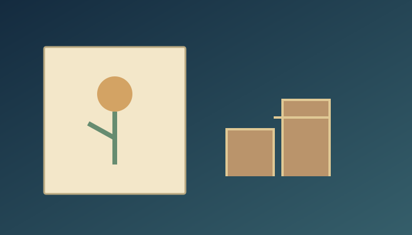

一二年級第一期：四篇全文及注音審閱
2026-10-10。本次 AI 協助新編；不是第三方故事摘錄，未宣稱教師或教育部審定。朗讀使用裝置語音，沒有預錄音檔。正文、問題、來源均由網站資料直接產生，避免審閱文件與網站不一致。
杯子外的小水滴
junior-cold-cup｜一～二年級｜自然與科學

小米把冷水倒進杯子。
她先把杯子外面擦乾。
過了一下，外面又濕了。
「杯子破了嗎？」小米問。
爸爸說：「先找找看。」
杯底沒有洞，桌上卻有水。
爸爸說，空氣中有看不見的水蒸氣。
它遇到冷杯子，就可能變成小水滴。
小米在杯下放一塊布。
她笑了：「不是每一滴水，都從杯裡跑出來！」
詞語／背景
水滴：小小的水珠。
閱讀後問題
杯子外面為什麼有水滴？
1. 空氣中的水蒸氣遇冷。
2. 杯子一定破了。
答案：1。冷杯子讓附近的水蒸氣變成小水滴。
生活小活動
和大人一起看冷杯子。不要用熱水。
來源與權利
{"creator":"AI 協助新編，逐句顯式注音與語境校對","humanReview":"未宣稱教育部審定或專業教師簽核","audio":"Web Speech API 即時語音；沒有預錄音檔","license":"未採正式自有授權，非第三方文章改寫"}
教育部國語小字典：全文注音編輯原則｜2026-10-10
教育部國語辭典簡編本：單一音讀與變調｜2026-10-10
USGS：凝結與水循環（冷杯表面水滴）｜2026-10-10
葉子上的小洞
junior-leaf-hole｜一～二年級｜自然與科學

小羽在地上看見一片葉子。
葉子中間，有兩個小洞。
「是小蟲的午餐嗎？」她問。
姐姐說：「也可能是別的原因。」
她們蹲下來看，沒有找到小蟲。
小羽拿出紙，畫下葉子的形狀。
她也畫了兩個洞，還有一個問號。
姐姐問：「問號要擦掉嗎？」
小羽搖頭：「先留下。我還想知道。」
她沒有摘新的葉子，把畫帶回了家。
詞語／背景
觀察：仔細看，找出線索。
閱讀後問題
小洞一定是小蟲咬的嗎？
1. 還不能確定。
2. 一定是。
答案：1。沒有看見原因，先把問號留下。
生活小活動
和大人看落葉。不要吃葉子，也不要抓小蟲。
來源與權利
{"creator":"AI 協助新編，逐句顯式注音與語境校對","humanReview":"未宣稱教育部審定或專業教師簽核","audio":"Web Speech API 即時語音；沒有預錄音檔","license":"未採正式自有授權，非第三方文章改寫"}
教育部國語小字典：全文注音編輯原則｜2026-10-10
教育部國語辭典簡編本：單一音讀與變調｜2026-10-10
紙船的第二次旅行
junior-paper-boat｜一～二年級｜生活與觀察

小河把用過的紙，折成小船。
紙上還有他昨天畫的山。
媽媽在桌上放好一小盆水。
小船浮著，好像一座會走的山。
過了一下，紙濕了，船慢慢歪了。
小河有點失望：「旅行結束了。」
他把濕紙收好，和媽媽擦乾桌面。
媽媽拿來另一張用過的紙。
小河在背面畫一條河，讓手指當小船。
這次不用水，也能出發。
詞語／背景
再用：把還能用的東西，用在別的地方。
閱讀後問題
小船濕了以後，小河做了什麼？
1. 收好濕紙，再畫新的路線。
2. 把紙丟進河裡。
答案：1。小河收拾桌面，讓故事繼續。
生活小活動
在用過的紙背面畫路線。不用到河邊玩水。
來源與權利
{"creator":"AI 協助新編，逐句顯式注音與語境校對","humanReview":"未宣稱教育部審定或專業教師簽核","audio":"Web Speech API 即時語音；沒有預錄音檔","license":"未採正式自有授權，非第三方文章改寫"}
教育部國語小字典：全文注音編輯原則｜2026-10-10
教育部國語辭典簡編本：單一音讀與變調｜2026-10-10
今天換你選
junior-take-turns｜一～二年級｜心理與生活

小平想拼積木，小青想畫畫。
「昨天也畫了，今天拼吧！」小平說。
小青搖頭。她的畫還差一點。
小平抱著積木盒，坐到另一邊。
過了一下，他問：「你還要畫多久？」
「畫完這朵花，就可以休息。」小青說。
兩人請大人幫忙看時間。
先畫五分鐘，再一起拼積木。
小青把花畫好。小平也找好了長長的積木。
他們把紙放在一旁，開始蓋一座花園。
詞語／背景
輪流：你先做，再換我做。
閱讀後問題
兩人最後怎麼安排？
1. 先畫再拼，也約好時間。
2. 一定要聽小平的。
答案：1。兩人說出想法，找到都能試的安排。
生活小活動
用兩張紙畫出兩種玩法，和家人談談怎麼輪流。
來源與權利
{"creator":"AI 協助新編，逐句顯式注音與語境校對","humanReview":"未宣稱教育部審定或專業教師簽核","audio":"Web Speech API 即時語音；沒有預錄音檔","license":"未採正式自有授權，非第三方文章改寫"}
教育部國語小字典：全文注音編輯原則｜2026-10-10
教育部國語辭典簡編本：單一音讀與變調｜2026-10-10